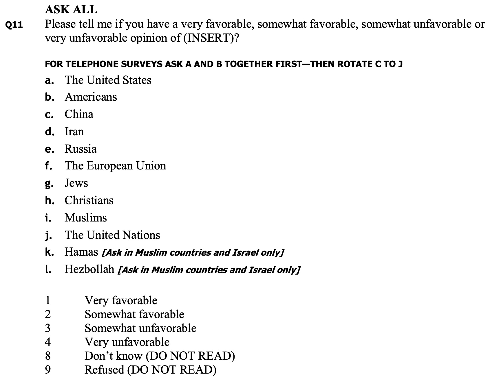
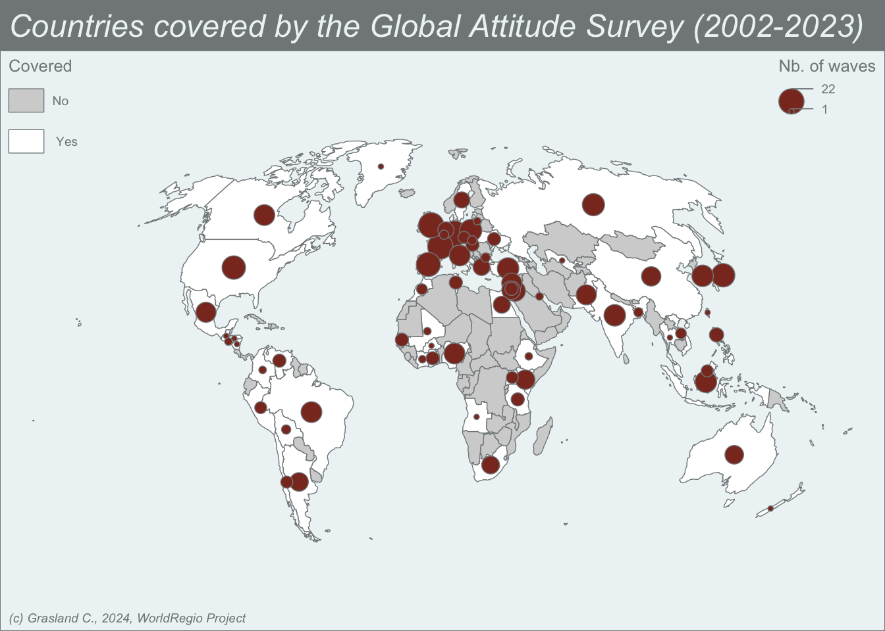

![]()
Introduction
Nous présentons ici les résultats très préliminaires d’une analyse des données de l’enquête Global Attitude Survey, collectée par le Pew Research Center depuis 2002. De plus amples informations sont disponibles sur un autre site web consacré à la polarisation mondiale des opinions.
Données
Les données utilisées dans notre analyse ont été extraites du site web du Pew Research Center où elles peuvent être librement téléchargées. Elles sont plus précisément extraites de l’enquête Pew Global Attitude Survey de 2002 à aujourd’hui (2023). De 2002 à 2023, 22 vagues de la PGAS ont été réalisées et la majorité des questions ont changé au fil du temps ou ont été formulées différemment, ce qui rend les comparaisons difficiles. Nous avons donc sélectionné un nombre très limité de questions qui ont gardé exactement la même formulation au fil du temps et qui ont été posées dans différentes vagues.
L’opinion sur les grandes puissances mondiales
Nous nous concentrerons ici sur la question relative à l’opinion des gens sur les Etats-Unis et d’autres grands Etats et organisations internationales dans le monde. Cette question est plus complexe car il s’agit d’une batterie de questions concernant différents pays mais aussi parfois différentes personnes, différentes organisations ou même différentes religions. La règle générale est de commencer par la question sur l’opinion des Etats-Unis (et éventuellement des « Américains ») et de proposer ensuite les autres questions dans un ordre aléatoire. Cela suggère que les Etats-Unis/Américains sont utilisés comme une référence autour de laquelle nous pouvons mesurer les écarts positifs ou négatifs. Une autre complication importante de cette question est le fait que certaines questions sont proposées à tous les pays étudiés, alors que d’autres ne sont posées que dans certains pays. Dans ce cas, nous sommes obligés d’admettre que la comparaison sera biaisée parce que la liste complète des items a une influence systémique sur les résultats de chaque item. A titre d’exemple, considérons la formulation de la question dans les vagues de 2009 et 2019.


La formulation de la question est la même et l’échelle ordinale à quatre niveaux est équivalente, mais le fait que la liste des items ait changé introduit une difficulté dans l’analyse des résultats, même si l’on décide de se concentrer uniquement sur les items qui sont présents dans les deux vagues (USA, Chine, Russie, UE, ONU). En 2009, l’évaluation est influencée par les questions sur les religions, ce qui n’est pas le cas en 2019. Même si l’on considère une seule année comme 2019, le fait que l’OTAN ou l’Allemagne soient ajoutées aux items en Europe mais pas dans les autres pays du monde modifiera probablement les réponses sur la Russie. Compte tenu des difficultés induites par l’effet de halo, nous avons décidé de limiter notre sélection de réponses aux questions qui (1) ont été posées à tous les pays et (2) aux questions qui concernent des États ou des organisations régionales, mais pas des peuples ou des religions. Dans l’analyse qui suit, nous nous limitons aux Etats-Unis, à la Chine, à la Russie et à l’Union européenne qui sont les questions les plus fréquemment posées.
Couverture spatiale
Il existe une grande variabilité dans la liste et le nombre d’États ayant fait l’objet d’une enquête par la PGAS. D’une manière générale, le nombre d’États étudiés était plus important pour les années impaires, avec une plus grande extension vers les pays en développement du Sud. Les années paires ont été caractérisées par un nombre plus faible de pays et une concentration sur les pays riches du Nord. Mais il y a de nombreuses exceptions à cette règle.
Les pays les plus présents dans les 22 vagues sont des membres de « l’Occident » (Allemagne, France, Royaume-Uni, Espagne, Japon, Pologne) et peuvent être considérés comme des « amis » des États-Unis. Les États-Unis eux-mêmes n’ont pas été investis dans la période finale 2021-2023, probablement parce que les questions posées dans PGAS sont également posées dans d’autres enquêtes nationales du Pew Research Center (PRC). Il est certainement possible de trouver les données pour ces années ailleurs sur le site web du PRC.
La Russie a fait l’objet d’enquêtes systématiques de 2002 à 2015, mais pas en 2016. Elle a ensuite été de nouveau présente en 2017-2019, mais pas par la suite. On peut imaginer que la possibilité de réaliser des enquêtes en Russie est devenue plus difficile après la première guerre d’Ukraine (2014) et impossible avec le début de la crise Covid (2020)
la Chine a été étudiée en 2002 et en 2005-2016 mais jamais après cette période. Comme dans le cas de la Russie, on peut imaginer qu’il est devenu difficile et finalement impossible de réaliser des enquêtes dans ce pays après la désignation de Xi Jiping comme chef d’Etat en 2013.
Dans le ‘Sud’, la couverture est beaucoup plus importante pour les grands pays émergents (Indonésie indienne, Turquie, Brésil, …) que pour les plus petits.
L’Afrique est moins couverte que le Moyen-Orient, etc. D’un point de vue statistique, il faut simplement retenir que l’enquête a été réalisée au moins une fois dans 70 pays du monde. Mais seule une minorité d’entre eux est susceptible d’être utilisée pour l’analyse des tendances sur une longue période.

En regardant la carte, il apparaît très clairement une distribution spatiale inégale avec une couverture très faible en Afrique ou en Asie centrale par rapport aux Amériques, à l’Europe et à l’Asie du Sud ou de l’Est. Le PGAS n’offrira donc pas une base parfaite pour l’analyse de l’évolution de l’opinion globale dans le monde. Mais il permet néanmoins d’explorer quelques grandes tendances dans toutes les parties du monde entre 2002 et 2023.
Tableau multidimensionnel
Afin de mieux formaliser les données, nous transformerons la base de données en une structure multidimensionnelle où chaque opinion sera décrite par une seule variable \(O_{ijt}\) où :
\(O\) est une opinion mesurée sur une échelle de Likert à 4 niveaux (« Très favorable », « Presque favorable », « Presque défavorable », « Très défavorable »)
\(i\) est l’origine de l’opinion (c’est-à-dire le lieu de l’enquête où l’opinion a été recueillie)
\(j\) est la cible de l’opinion (c’est-à-dire le pays ou l’organisation qui a été évaluée). \(i\) est l’origine de l’opinion (c’est-à-dire le lieu de l’enquête où l’opinion a été recueillie). Nous limitons ici la valeur à trois cas, à savoir les États-Unis, la Chine et la Russie.
\(t\) la période (c’est-à-dire la vague d’enquête) de collecte de l’opinion.
La base de données est finalement complétée par deux paramètres structurels décrivant l’âge \(A_{it}\) et le sexe \(S_{it}\) de la personne qui a formulé l’opinion.
On peut éventuellement croiser les résultats avec une autre variable \(R_{it}\) décrivant l’opinion sur la religion en utilisant une autre échelle de Likert à 4 niveaux.
Enfin, chaque échantillon collecté dans un pays i à un instant t est associé à un critère de pondération \(W_{it}\) qui assure une meilleure représentation de l’ensemble de la population.On transforme \(O_{it}\) en une variable booléenne \(F_{it}\) relative à l’opinion favorable (très favorable ou plutôt favorable) et l’on élimine les personnes sans opinion.
Evolution de l’opinion mondiale sur les grandes puissances
Nous avons utilisé un modèle logit dans lequel la probabilité de formuler une opinion positive dépend du lieu de l’enquête (car certains pays sont plus susceptibles de donner des opinions positives ou négatives à tous les pays cibles) et de la combinaison de la période et des pays cibles.
\(log \frac{p}{1-p} = \alpha + \beta_i.origin_i + \phi_{jt}.[target\times time]_{jt}\)
Nous pouvons donc extraire les paramètres \(\phi_{jt}\) qui indiquent pour chaque pays cible (USA, Russie, Chine, UE) une estimation de la probabilité de recevoir une opinion favorable à chaque période de temps où l’enquête fournit des informations.

Après élimination des variations liées aux pays d’origine, nous obtenons des paramètres comparatifs des appréciations des puissances mondiales à différentes périodes et nous pouvons en tirer des tendances grâce à l’interpolation par la méthode loess. Ce qui apparaît clairement dans la figure, c’est une divergence récente entre les États-Unis et l’Union européenne d’une part, la Chine et la Russie d’autre part. Plus précisément :
L’Union européenne a maintenu un bon niveau d’appréciation pendant toute la période avec apparemment une augmentation entre 2014 et 2019-23, mais difficile à valider en raison du manque de données.
Les États-Unis ont connu une évolution plus chaotique, avec des hauts et des bas en fonction des différents présidents. Mais dans l’ensemble, la tendance générale semble être positive au cours de la période.
La Chine avait initialement une excellente position et était la puissance mondiale la plus appréciée en 2005-2006 et également en 2009-2013. Mais cette appréciation favorable a décliné régulièrement et particulièrement en 2020, probablement en relation avec la crise du Covid dont ce pays a constitué le foyer d’origine.
La Russie a la même appréciation que les Etats-Unis en 2007-2008 et est restée stable avec juste un lent déclin en 2015. Mais la baisse a été très forte après 2019 et le niveau le plus bas a été atteint en 2022-23 avec la deuxième guerre en Ukraine.
Ces résultats doivent être interprétés avec prudence car, malgré le fait de contrôler l’effet des lieux d’enquête, il reste une forte influence de la sélection des pays impliqués ou exclus de la Global Attitude Survey.
Classement des pays enquêtés selon leurs préférences pour les quatre puissances mondiales
Nous pouvons procéder à une deuxième analyse où nous essayons d’évaluer l’opinion moyenne des pays de l’enquête sur les quatre puissances mondiales au cours de la période d’observation 2002-2023. Nous supposons donc que la hiérarchie des opinions sur cette puissance mondiale est restée stable dans le temps au sein de chaque pays d’enquête, ce qui n’est probablement pas le cas. Mais nous nous attendons à révéler une certaine organisation générale du monde dans les régions partageant les mêmes attitudes géopolitiques. Le modèle logit utilisé dans ce cas prend la forme suivante :
\(log \frac{p}{1-p} = \alpha + \delta_t.time_t + \tau_{jt}.[origin\times target]_{ij}\)
Nous obtenons un tableau du paramètre \(\tau_{jt}\) avec quatre colonnes (une pour chaque puissance) et autant de lignes que de pays étudiés. Nous éliminons les lignes correspondant aux pays qui n’ont pas donné d’avis sur chacune des quatre puissances mondiales. Nous éliminons également les États-Unis, la Russie et la Chine afin d’éviter les biais liés à l’auto-appréciation. Ce tableau est ensuite utilisé pour la réalisation d’une Analyse en Composantes Principales et d’une Classification Hiérachique à l’aide de critères de guerre.
Deux dimensions principales
Nous remarquons que les deux premières dimensions résument plus de 80% de l’information et que seuls des détails mineurs sont recueillis par les dimensions trois et quatre.
Dim1 révèle une opinion générale sur les quatre puissances mondiales qui peut être généralement positive (droite) ou généralement négative (gauche).
Dim2 révèle une polarisation entre ‘l’Occident et le reste’ ou, autrement dit, entre ‘le Nord et le Sud’. Les pays situés au sommet sont plus favorables à la Russie et à la Chine qu’aux États-Unis et à l’Union européenne. Les pays situés en haut de l’échelle sont plus favorables à la Russie et à la Chine qu’aux États-Unis et à l’UE.
Dim3 caractérise des situations spécifiques de dissociation entre les préférences pour la Chine et la Russie qui peuvent par exemple se produire dans le cas du Vietnam.
Dim4 caractérise des cas exceptionnels de dissociation entre les préférences pour les Etats-Unis et l’Europe qui peuvent par exemple se produire dans le cas du Royaume-Uni.
Nous pouvons maintenant examiner la position des pays de l’enquête sur ces différentes dimensions. Mais nous pouvons tout d’abord procéder à un regroupement hiérarchique afin d’examiner la position de groupes de pays plutôt que de pays individuels. Nous obtenons clairement cinq groupes de pays avec des profils caractéristiques.
Cinq types d’opinions

Le groupe 1 se caractérise par une opinion très négative à l’égard des États-Unis et de l’UE et une opinion négative à l’égard de la Russie. Seule la Chine se caractérise par une opinion moyenne comparable à celle du reste du monde. Les pays membres de ce groupe sont typiquement des pays arabes du Moyen-Orient (Égypte, Jordanie, Pakistan, Territoires palestiniens occupés, Turquie)
Le groupe 2 se caractérise par une opinion positive de l’UE, une opinion neutre des États-Unis et une opinion très négative de la Russie et de la Chine. Cette situation est typiquement observée dans les pays membres de l’UE mais plutôt dans la partie occidentale et septentrionale (France, Allemagne, Belgique, Suède) mais aussi dans d’autres pays de l’OCDE (Japon, Corée, Canada, Australie, …)
Le groupe 3 est généralement caractérisé par un profil moyen. Plus précisément, il se caractérise par une opinion neutre de la Russie, une opinion légèrement négative des États-Unis, une opinion légèrement positive de la Chine et une opinion plus négative de l’Union européenne que dans le reste de l’échantillon. Cette situation correspond à un large groupe de pays émergents situés partout dans le monde, y compris des pays européens du sud et de l’est de l’Europe comme (Grèce, Slovénie, République tchèque, …). Le Royaume-Uni fait partie de ce groupe, de même qu’Israël.
Le groupe 4 est un cas très spécifique de pays ayant une opinion beaucoup plus positive sur la Russie que d’habitude, une opinion plutôt positive sur les États-Unis et une opinion plutôt négative sur la Chine. Les pays situés dans ce groupe sont des pays européens ayant de bonnes relations avec la Russie (Bulgarie, Slovaquie) ou des pays asiatiques caractérisés par des relations négatives avec la Chine, généralement en raison de conflits frontaliers (Inde, Vietnam, Philippines).
Le groupe 5 est complètement à l’opposé du groupe 1 et se caractérise par une opinion très positive à l’égard de toutes les puissances mondiales sans distinction. Cette situation est typiquement associée à tous les pays d’Afrique subsaharienne présents dans les enquêtes (Côte d’Ivoire, Ethiopie, Ghana, …) mais aussi à d’autres pays pauvres et en développement (Bangladesh, Nicaragua, Thaïlande).
Cartographier les proximités géopolitiques
Nous pouvons enfin élaborer une carte géopolitique de l’opinion des pays sur la principale puissance mondiale sur la période 2002-2023. Pour ce faire, nous projetons les groupes sur les deux premières dimensions de l’ACP et visualisons les ellipses de dispersion de chaque groupe.

Le résultat le plus frappant de l’analyse est le fait que de nombreux groupes sont clairement associés à des régions du monde spécifiques, même s’ils constituent des exceptions à cette règle. D’autres recherches tenteront d’expliquer l’origine de ce schéma régional. S’agit-il simplement d’une corrélation avec des variables cachées ? Ou s’agit-il d’effets géographiques de la distance et de la diffusion de l’opinion ?
Citation
@online{grasland2024,
author = {Grasland, Claude},
title = {Cartographier l’opinion Mondiale},
date = {2024-10-12},
url = {https://worldregio.github.io/fr/posts/2024-10-12-global-opinion/},
langid = {en}
}